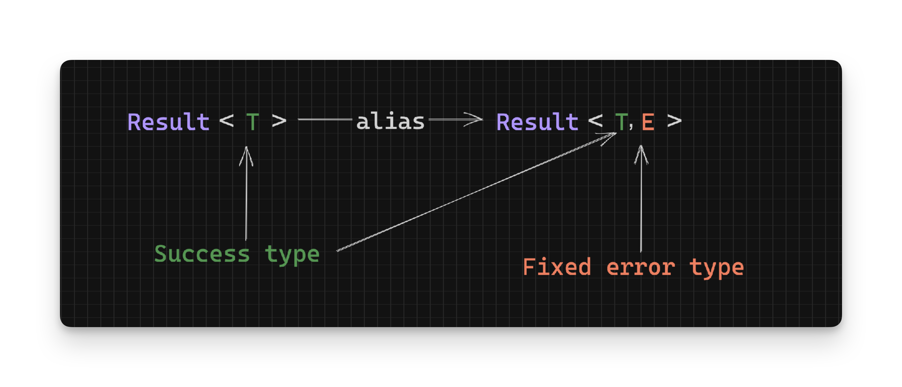

Working With Rust Result - Asides - Part 13
Here are some general guidelines to keep in mind.
Functions that return Result in std
Many of the std functions return Results if the action you’re trying to perform can fail. Here’s
an example from the Write trait in std::io:
trait Write {
fn write_all(&mut self, buf: &[u8]) -> Result<()>
...
}Using the write_all method to write the contents of the supplied buffer (buf) can fail with IO errors, or it could succeed with a Unit (()).
Result should have two type variables and the example above clearly only has one. What’s going on?
A frequent pattern used in Rust libraries is to create a type alias for Result that wraps a particular error type. In the example above, Result is aliased as follows:
pub type Result<T> = Result<T, Error>;Where Error is a std::io::Error:
pub struct Error { /* private fields */ }Essentially giving you:
pub type Result<T> = Result<T, std::io::Error>;
With a type alias like above, we don’t have to constantly specify a type for a Result’s error. This is useful where many methods return the same error type. For example, all std::io methods that return Result use std::io::Error as the error type.
Strict vs Laziness
There’s a distinction that applies to all _or and _or_else variants for Result methods. Let’s take unwrap_or and unwrap_or_else as an example. As a refresher, here are the definitions for both functions.
unwrap_or:
pub fn unwrap_or(self, default: T) -> T {
match self {
Ok(t) => t,
Err(_) => default,
}
}unwrap_or_else:
pub fn unwrap_or_else<F: FnOnce(E) -> T>(self, op: F) -> T {
match self {
Ok(t) => t,
Err(e) => op(e),
}
}With unwrap_or_else, the function supplied (op) will not get called unless there is an Err value to call it with; it will not get called on Ok values. This is different to unwrap_or’s default value which is evaluated on Ok values as well:
let strict_result_ok: Result<u32, String> = Ok(1);
let strict_result_err: Result<u32, String> = Err("You have errors".to_owned());
strict_result_ok.unwrap_or(panic!("boom")); // panics even though this is an `Ok`
strict_result_ok.unwrap_or_else(|_| panic!("boom")); // does not panic because this is an `Ok`
strict_result_err.unwrap_or_else(|_| panic!("boom")); // panics on `Err` as expectedYou can think of unwrap_or as being “strict” or “eager” in its evaluation of the default parameter - it always evaluates the default value on Ok and Err. The op function in unwrap_or_else can be thought of as “lazy” or “evaluated when needed” - it only runs when the value returned is an Err (as functions can only get called with their input parameters).
In general prefer the or_else version of a method if you don’t want your code running until there is a reason for it to. The _or variant is fine if your default value is a constant or has been already evaluated.